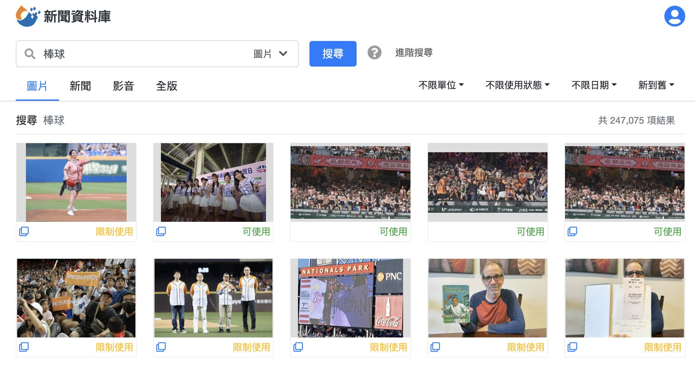
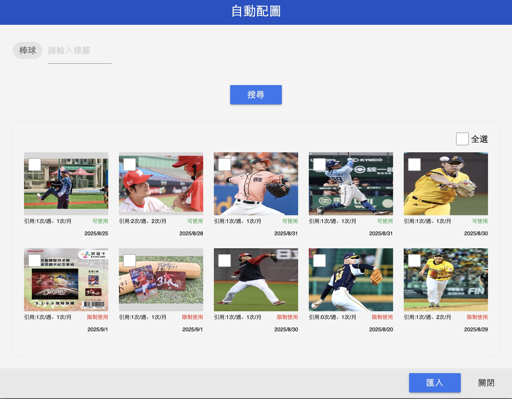

精選案例
自動配圖 從編輯的回饋到產品優化
新聞編務系統的 AI 自動配圖功能，上線後搜尋到實際匯入稿單的比例只有 3%。我依使用量數據訪談記者與編輯，把「不好用」拆成四類問題，重排優化順序，改版後使用率提升到 42%。
問題
在新聞製作流程裡，配圖一直是耗時的環節。時間壓力下，編輯得到公司的新聞資料庫翻找、回自己的圖庫撈，真的找不到就用示意圖硬塞，只為了讓新聞列表有圖。
2023 年 9 月，編務系統推出第一版「自動配圖」，後來也整合進記者發稿 app。功能做完了，但整體使用率不如預期。
這時候最容易做的判斷是「介面不好用，改介面」或「AI 不夠準，調 Prompt」。但使用率低可能來自任何一個環節 - 功能本身、搜尋品質、或根本沒人知道它在哪。在知道問題出在哪之前動手，只是在猜。
所以我先去問。
判斷與取捨
先訪談，而不是先開規格
我依照使用量數據挑選受訪對象，訪談記者與編輯，問的是實際使用情境與放棄的那個瞬間。
幾場訪談下來，回饋收斂成四類：
| 使用者說的 | 問題的本質 |
|---|---|
| 「搜金秀賢結果跑出陳其邁，跟金秀賢完全沒有關係。」 | 圖像與新聞主題的相關度不足 |
| 「搜尋結果的圖片太少了，還有很多一樣的照片或限制使用的照片。」 | 圖庫廣度與可用性不足 |
| 「我只想搜健保，卻冒出一堆無關標籤，還要一個一個刪掉。」 | 標籤精準度不足，反而增加工作量 |
| 「我其實不知道這功能入口在哪。」「我點過一次，覺得速度不快，就回去用典藏了。」 | 使用習慣沒有養成 |
這四類裡，前三類是產品問題，第四類不是。

調整前：較容易出現與主題不相關的圖片
先修產品，再談推廣
第四類（不知道入口、試過一次就放棄）看起來最好解 - 辦個教學、發個公告就行，成本最低、最快看到數字。
但我判斷順序要反過來。「試過一次就放棄」代表他們已經體驗過了，而且不滿意。如果功能本身還沒修好就去推廣，只會讓更多人完成他們的第一次失望，第二次要再把人找回來更難。
所以優化順序排成：先把搜尋結果修到可信，再處理曝光與習慣。
排序不能只看「相關度」
重新定義圖片排序邏輯時，最直覺的做法是純粹依新聞相關度排。但訪談裡有一句話改變了我的想法 - 「還有很多一樣的照片或限制使用的照片」。
對編輯來說，一張相關度很高但版權受限、不能用的圖，跟沒找到是一樣的。相關度高不等於幫上忙。
所以排序邏輯定成三項並列：新聞相關度 ＋ 時效性 ＋ 可用性。可用性之所以進到排序裡，不是技術考量，是因為使用者的任務不是「找到一張相關的圖」，而是「找到一張現在就能用的圖」。

調整後：搜尋結果與主題的相關度明顯提升
執行
依照排定的順序，開發團隊執行四項調整：
- 圖像理解增強 - 加入視覺模型，讓系統對圖片內容的判別與分類更精確。
- 擴充人臉辨識圖庫 - 增加可識別名單，搜尋名人時更準。
- 重新設計 AI 標籤機制 - 過濾多餘標籤，讓搜尋結果更貼近新聞主題。
- 擴充圖片來源與排序邏輯 - 來源變多，排序改為新聞相關度＋時效性＋可用性。
技術實作由開發團隊負責；我負責的是問題定義、優化順序，以及排序邏輯要依據什麼。
結果
搜尋後實際匯入稿單的比例，從 3% 提升到 42%。
這裡看的是搜尋過自動配圖之後，真的把圖匯入稿單使用的比例 - 不是有多少人打開過功能，而是打開之後有沒有找到能用的圖。改版前是 3%：編輯搜了，然後空手離開。改版後是 42%。
這個落差說明的不是「AI 變準了」，而是四類問題裡有三類根本不是模型問題：圖庫不夠大、標籤增加工作量、相關但不能用的圖排在前面。真正擋住使用者的，是這些。
訪談本身也留下可以重複使用的東西：四類問題、一份排好的優化順序，以及一條寫得進規格的排序規則（相關度＋時效性＋可用性）。這些在改版結束後仍然成立。
反思
「不好用」是一種感受，不是一個問題。
同樣三個字，在這個案子裡指向四件完全不同的事 - 有的是模型判別不準，有的是圖庫不夠大，有的是標籤設計增加了工作量，有的根本不是產品問題，是沒人知道它存在。如果當初照字面去「改介面」或「調 Prompt」，大概會修到其中一塊，然後繼續不解。
使用者描述的是症狀，我的工作是找出病灶。這件事沒有捷徑，只能去問、去歸類、去排序。
另一個學到的是：可用性應該和相關度一起被當成排序條件。產品常把「做得準」當成目標，但使用者要的是「任務能完成」。一張不能用的圖，再準也沒有價值。
還沒解決的也記在這裡 - 編輯希望有更多示意圖、希望能整合自己拍的照片與攝影中心素材、也期待 AI 直接生成新聞需要的示意圖。自動配圖目前的定位不是替編輯決定用哪張照片，而是在分秒必爭的發稿現場，讓他們更快找到一張能用的圖。
這件事後來也寫成了專欄：自動配圖升級！那些編輯說的話，變成了我們的最佳化